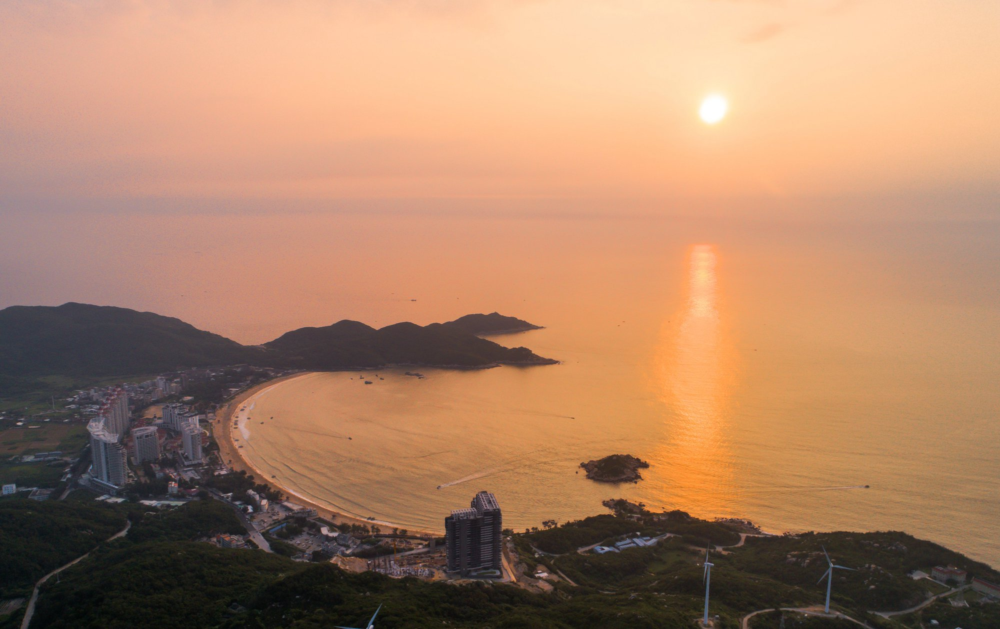
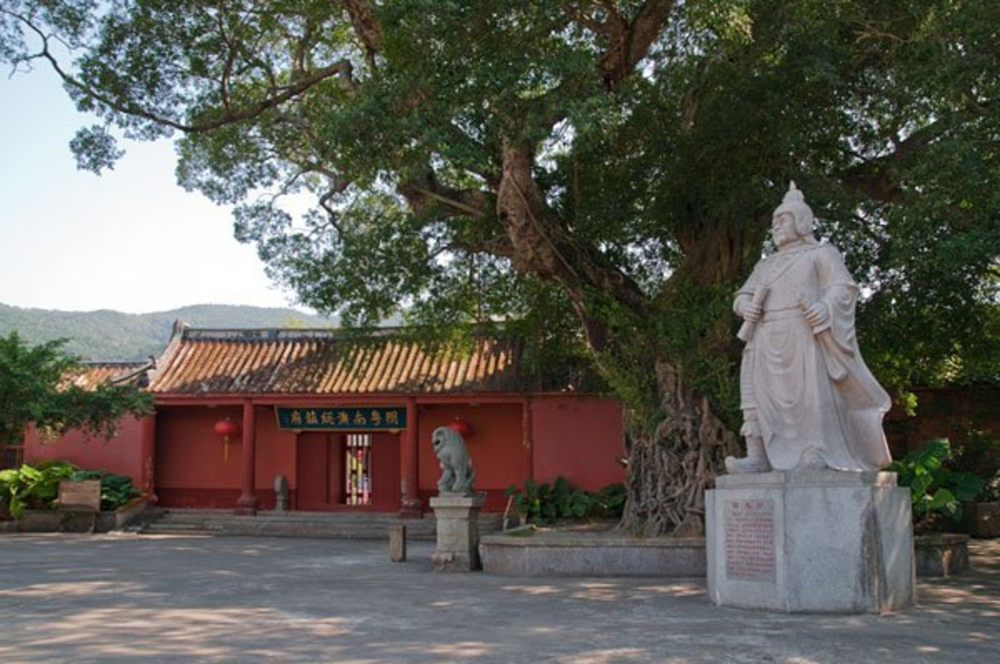
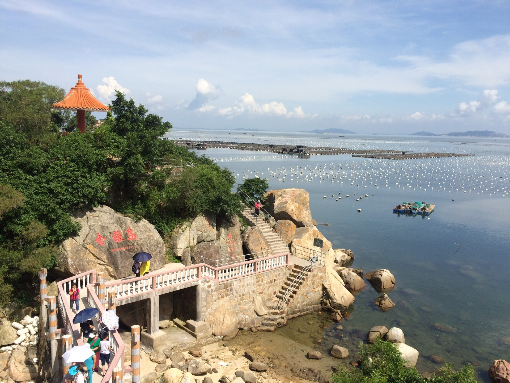
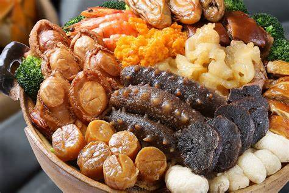

南澳岛 - 汕头海上明珠
南澳岛简介
南澳岛是广东省唯一的海岛县，位于闽、粤、台三省交界海面，由 37 个大小岛屿所组成。这里拥有美丽的海滨风光、悠久的历史文化和丰富的自然资源，是一个度假、休闲和旅游的绝佳去处。
景点介绍

青澳湾
青澳湾是南澳岛最著名的海滩之一，被誉为“东方夏威夷”。这里的海水清澈见底，沙质细腻柔软，海岸线呈月牙形，是游泳、冲浪、晒太阳的好地方。傍晚时分，还可以欣赏到美丽的海上日落。

总兵府
总兵府是明清时期南澳总兵的衙署，也是中国现存唯一的海岛总兵府。这里保存了大量的历史文物和古建筑，如古碑刻、古兵器等，见证了南澳岛的历史变迁。

金银岛
金银岛是南澳岛的一个小岛，岛上遍布奇礁怪石，传说这里是海盗吴平藏宝地。登上金银岛，可以欣赏到美丽的海岛风光，感受神秘的海盗文化。
美食推荐

南澳海鲜
南澳岛四面环海，海鲜资源丰富。这里的海鲜新鲜美味，品种繁多，如龙虾、螃蟹、贝类、鱼类等。清蒸螃蟹、白灼虾、海鲜粥等都是不容错过的美食。
游玩攻略
最佳游玩时间
南澳岛的最佳游玩时间是每年的 5 - 10 月，这段时间天气温暖，阳光充足，海水清澈，适合进行各种海上活动。
交通指南
可以先到达汕头市区，然后乘坐公交车或包车前往南澳岛。也可以自驾通过南澳大桥前往。
住宿建议
南澳岛有各种档次的酒店、民宿可供选择。如果想欣赏海景，建议选择住在青澳湾附近；如果想体验当地生活，可以选择住在渔村的民宿。